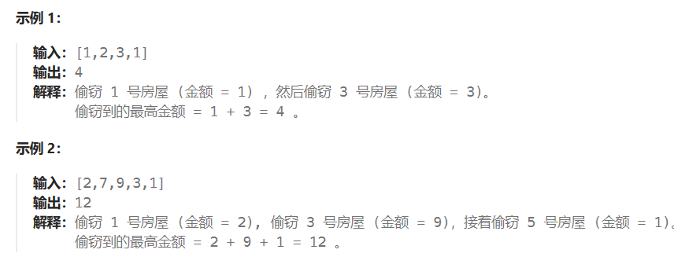

# 问题描述
你是一个专业的小偷，计划偷窃沿街的房屋。每间房内都藏有一定的现金，影响你偷窃的唯一制约因素就是相邻的房屋装有相互连通的防盗系统，如果两间相邻的房屋在同一晚上被小偷闯入，系统会自动报警。
给定一个代表每个房屋存放金额的非负整数数组，计算你 不触动警报装置的情况下 ，一夜之内能够偷窃到的最高金额。

# 解题思路
如果我们考虑是否偷第 i 间屋子，那么我们就得考虑以下情况：
偷第 i 间屋子：那么我们就不能偷第 i-1 个屋子，但是可以偷第 i-2 个屋子。
不偷第 i 间屋子：那么我们当前可以选择偷第 i-1 个屋子，但是不能偷第 i-2 个屋子。
根据动态规划的特性：当前的状态由前者或者后者的状态推算获得。所以我们发现，我们判断是否要偷第 i 间屋子可以根据第 i-1 和第 i-2 间屋子的价值所影响。
然后我们可以定义相应的 dp 数组，然后通过方程来计算出结果，请继续往下看。
# dp 数组的含义，初始化以及状态转移方程
于是我们可以定义一个 dp 数组 dp [i] 用来表示偷第 i 间屋子及之前的屋子的最大价值。
我们可以根据上面所说，是否偷 i 取决于 i-1 和 i-2。如果偷 i 则代表 i 的值加上 dp [i-2] 的值。如果不偷 i 则 i 的值为 dp [i-1]。
所以我们可以得到求得 dp [i] 的方法：
dp[i] = max(dp[i-1] , dp[i-2] + nums[i]);
这也是状态转移方程。
同时我们发现，我们 dp 数组最起码要保证 dp [0] 和 dp [1] 是初始化好的，因为在方程中，下标为 i-2 和 i-1 的数组元素是推出当前 i 元素的关键所在，数组起始下标为 0，则必须从 dp [2] 开始向后推导。（设 i=2，则 dp [2] = max (dp [1] , dp [0] + dp [2] ))
于是现在给 dp [0] 和 dp [1] 初始化即可，dp [0] 的值为 nums [0]，因为根据 dp 数组的定义第 0 间屋子的价值应该等于 dp [0]。dp [1] 的值为：第 0 座房子和第 1 座房子的最大价值，我们在 nums [0] 和 nums [1] 之间选一个最大值。
# 遍历顺序
从第 2 开始向后遍历。
# 完整题解代码
class Solution { | |
public: | |
int rob(vector<int>& nums) { | |
if(nums.size() == 0){ | |
// 如果没有房间给你偷，则返回 0 | |
return 0; | |
} | |
if(nums.size() == 1){ | |
// 如果只有一个房间，那么我们只能偷这一个房间 | |
return nums[0]; | |
} | |
// 如果是有很多个房间的情况： | |
//dp 数组的含义：dp [i] 表示：i 以内的房屋，最多可以偷窃的金额为 dp [i] | |
// 我们可以发现， | |
// 我们如果偷第 i 间屋子，那么我们当前偷得的价值就是 dp [i-2] 的价值加上当前屋子的价值 | |
// 如果我们不偷第 i 间屋子，那么我们当前偷得的价值就是 dp [i-1] | |
// 以上两种情况求最大值即可 | |
// 于是状态方程为：dp [i] = max (dp [i-1],dp [i-2]+nums [i]); | |
//dp 的初始化 | |
// 状态方程的在计算第 i 层时，都是基于 i-1 层和 i 层的结果得来的 | |
// 所以我们最少也得从 2 开始，所以要初始化 0 和 1 | |
// 如果没有屋子给你偷那么就偷不到钱，于是 dp [0] = nums [0] | |
// 如果只有一间屋子给你偷，那么我们在偷第一间屋子和偷第 0 间屋子直接取最大值。 | |
// max(nums[0],nums[1]); | |
// 其他值随意，因为我们是前面的状态决定后面的状态，所以是从前往后遍历 | |
// 无需担心后面的值会影响前面的值 | |
vector<int> dp(nums.size()); | |
dp[0] = nums[0]; | |
dp[1] = max(nums[0],nums[1]); | |
// 记得从第二个房间开始往后遍历 | |
for(int i = 2; i< nums.size();i++){ | |
dp[i] = max(dp[i-1],dp[i-2]+nums[i]); | |
} | |
// 返回 | |
return dp[nums.size()-1]; | |
} | |
}; |